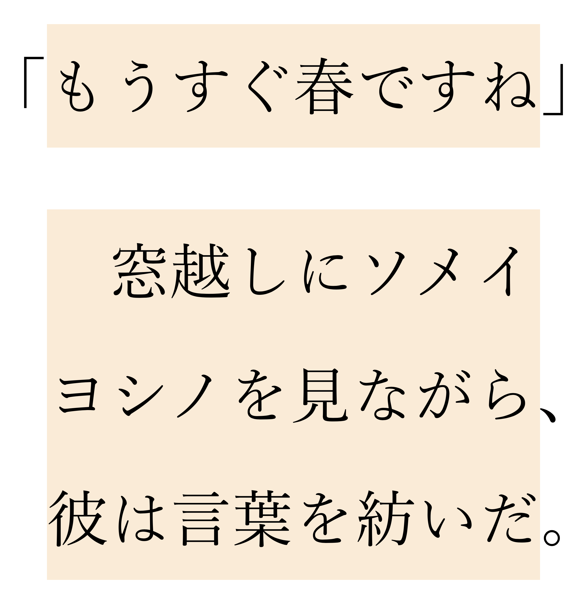
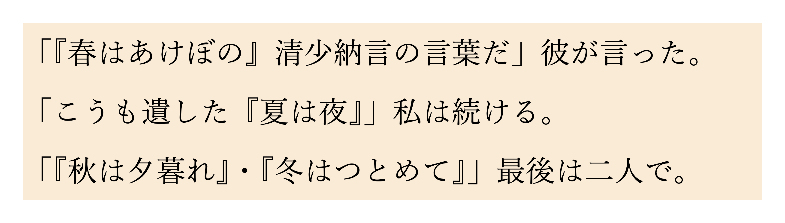

今から使える、いつか使える
日本語ウェブ文字組みの機能
CSS Nite
『CodeGridから読み解くイマドキのCSS 第二弾』
自己紹介
- 名前
- 國仲義則 / Online: matori
- 所属
- PixelGrid Inc.
フロントエンド・エンジニア - @ub_pnr
- ウェブサイト
- Unformed Building
日本語のウェブサイト
- 日本語でもウェブサイトは問題なく作れるし見られる
- 書籍などで使われる文字組みの機能はかなり制限されていた
- 少しずつではあるが、できることは増えてきている
- それらの機能をいくつか紹介
今すぐ使える機能
ルビ
基本的なHTML
必要な要素は3つ
ruby, rt, rp
春
以前までのHTML
春
rb要素は削除され、非標準となった
ルビの3要素
ruby- ルビ全体を囲む要素
rt- ルビ文字の要素
rp- フォールバック用の要素
二重ルビのHTML
今の書き方
春
以前までの書き方（一例）
春
rp要素について
春
春
ruby-positionプロパティ
ルビ関係のCSSプロパティは
いくつかあるが、まずはこれを
覚えておきたい
.over {
-webkit-ruby-position: before; /* Safari */
ruby-position: over;
}
.under {
-webkit-ruby-position: after; /* Safari */
ruby-position: under;
}
春
春
春
.under {
-webkit-ruby-position: after;
ruby-position: under;
}
.under > ruby {
-webkit-ruby-position: before;
ruby-position: over;
}
春
圏点
text-emphasisプロパティ
text-emphasisはショートハンドプロパティ
text-emphasis-styletext-emphasis-color
em {
font-style: normal; /* 初期スタイルをリセット */
-webkit-text-emphasis: dot; /* Chrome */
text-emphasis: dot;
}
…
窓越しにソメイヨシノを見ながら…
em {
font-style: normal;
-webkit-text-emphasis: dot open;
text-emphasis: dot open;
}
様々なスタイル
任意の圏点スタイル
em {
font-style: normal;
-webkit-text-emphasis: "★";
text-emphasis: "★";
}
圏点の色
em {
font-style: normal;
color: tomato;
-webkit-text-emphasis: dot;
text-emphasis: dot;
}
em {
font-style: normal;
color: inherit;
-webkit-text-emphasis: dot tomato;
text-emphasis: dot tomato
}
ルビとの併用
もうすぐ
春
ですね
em {
font-style: normal;
-webkit-text-emphasis: dot;
text-emphasis: dot
}
Firefox
ChromeとSafari
一部のブラウザで
使える機能
句読点と括弧類のぶら下げ

hanging-punctuationプロパティ
- 現在、一部機能を除いてSafariがサポート済み
first、last、allow-endまたはforce-endforce-endはサポートなし
「もうすぐ春ですね」
□窓越しにソメイヨシノを見ながら、彼は言葉を紡いだ。
p {
margin-inline: auto;
width: 8em;
background-color: antiquewhite;
hanging-punctuation: first last allow-end;
}
未サポート環境での描画
Safariでの描画
first
last
end
括弧類はendではぶら下げられない
「もうすぐ春ですね」
□窓越しにソメイヨシノを見ながら、彼は言葉を紡いだ。
firstは1字下げに使える？
「もうすぐ春ですね」
窓越しにソメイヨシノを見ながら、彼は言葉を紡いだ。
p {
margin-inline: auto;
width: 9em;
background-color: antiquewhite;
hanging-punctuation: first last allow-end;
text-indent: 1em;
}
こういうHTMLならOK
「もうすぐ春ですね」
窓越しにソメイヨシノを見ながら、彼は言葉を紡いだ。

使っていいの？
lastとallow-endは未サポート環境に影響を及ぼさない- 1字下げの例のように、
firstは場合によっては影響があるので注意が必要
以上を考慮すれば、使ってもよさそう
HTMLコードでの改行処理
「もうすぐ
春ですね」
Segment Break Transformation Rules
区分分断の変形規則
- HTML中の空白処理に関する決め事
- Firefoxがサポート済み
HTMLの例
「もうすぐ
春ですね」
描画
Firefoxでの描画
比較
- 日本語文字間の改行と、改行に続くホワイトスペースが除去される
- 改行すると半角スペースが入っちゃう問題が解決される
（中国語などもあるので、正確には日本語に限らない）
これまでの問題
日本語HTMLは1行が長くなりがち
- 一定文字数で折り返すルールを守るのが難しい
- コード整形ツールなどで改行されると困る
- バージョン管理ツールと相性が悪い
（差分がわかりにくい）
区分分断の変形規則により、
これらが解消されると考えられる
現状
- サポートしているのはFirefoxのみ
- 未サポート環境に影響がある
- 残念ながらこれまでどおりに、
改行せずに書いたほうが安全
いつか使える
かもしれない機能
特定文字間の空白処理
text-spacingプロパティ
- 昔の仕様では
text-autospaceという名前だった text-autospaceとtext-trimの仕様が合体してtext-spacingへ
何ができるの？
いろいろできます！
日本語で嬉しい機能を紹介
四分アキ
半角英数と日本語の文字との
間に1/4文字の空白を加える
（おおまかな表現。正確にはもっと複雑）
2021年11月19日のCSS Nite情報
p {
text-spacing: ideograph-alpha ideograph-numeric;
}
2021 年 11 月 19 日の CSS Nite 情報
- CSS指定なし
text-spacing利用- 半角スペース追加、CSS指定なし
約物の空白処理 1
行頭の開き括弧類や
行末にある閉じ括弧類の
空白を調整
p {
width: 9em;
background-color: antiquewhite;
}
「もうすぐ春ですね」
p {
width: 9em;
background-color: antiquewhite;
text-spacing: trim-start;
}
p {
width: 9em;
background-color: antiquewhite;
text-spacing: trim-start trim-end;
}

p {
width: 18em;
background-color: antiquewhite;
}
p {
width: 18em;
background-color: antiquewhite;
text-spacing: trim-start;
}
p {
width: 18em;
background-color: antiquewhite;
text-spacing: trim-start space-first;
}
約物の空白処理 2
連続する開き括弧類や
閉じ括弧類の空白を調整
p {
width: 25em;
background-color: antiquewhite;
}
「『春はあけぼの』清少納言の言葉だ」彼は言った。
「こうも遺した『夏は夜』」私は続ける。
「『秋は夕暮れ』・『冬はつとめて』」最後は二人で。
p {
width: 25em;
background-color: antiquewhite;
text-spacing: trim-adjacent;
}

比較
現状
- サポートしている環境はない
- いつ実装されるか不明
- 使えるようになったら、
より美しい文字組みが可能に
今すぐ試したい
CSS組版プロジェクト「Vivliostyle」
- つい先日
text-spacingのサポートを開始 - 同時に
hanging-punctuationも
対象バージョンは 2.12.0 (2021-11-13)
終わりに
- 日本語ウェブサイトでの
文字組み機能は改善されてきた - 今後もよくなっていくだろう
- 一見すると地味な機能が多いが、
こういったことは本当に喜ばしい
（文字を読まないウェブサイトは少ないので） - 仕様の提案・策定に関わる方々、
それを実装するウェブブラウザ
開発者の方々に感謝
ありがとうございました